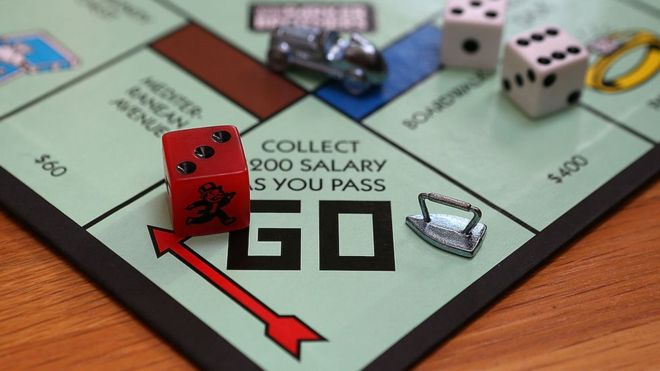

El juego de mesa más vendido de la historia
Antes
Un juego creado con la función de servir como herramienta para enseñar las teorias acerca de la justicia social y económica extraidas del estudio titulado Progreso y Miseria de Henrry George.
Monopoly
Comercializado por vez primera en el año 1936
A lo largo de 80 años el juego ha sufrido una notable evolución. Sus multiples versiones y sus tantas versiones han dado pie a que se cambiara desde la caja que lo contiene hasta los elementos que lo componen. Logrando así, mantenerse como el favorito a través de las décadas.
Ahora
Con los años la finalidad del juego cambió para solo disfrutar un buen rato, negociando propiedades y hasta haciendo uso de medios electrónicos para todas las transacciones que requiere el juego.

Con información de Gráffica.info.cultura visual